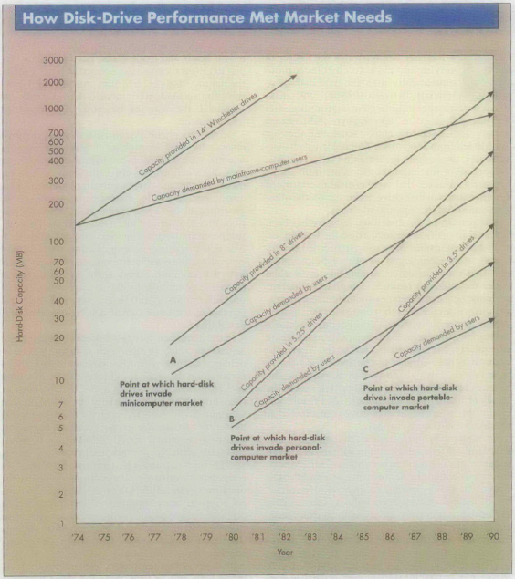

Clayton Christensen被认为是至今最伟大的企业管理思想巨匠之一，1997年其所著《创新者的窘境（The Innvator's Dilemma）》至今仍被科技界奉为圭臬。正是因为此书，使颠覆式创新（Disruptive Innovation）成为几乎有科技界从业者口中津津乐道的概念。
于是各类创新咨询层出不穷、以此为生的「创新咨询师」、「创新教练」振聋发聩地喊出「不是颠覆别人、就是被颠覆」、「不创新、毋宁死」的口号——来自埃森哲的咨询师Larry Downes甚至将颠覆式创新升华为「颠覆大爆炸（Big Bang Disruption）」，网站上的标题是：Big Bang Disruption: The innovator's disaster（创新者的灾难）。
当原来的「窘境」变成了「灾难」，颠覆式创新理论在将近20年的时间里到底发生了什么？为何这个曾今影响了许多企业管理者的理念到如今变成了咨询公司「咋咋呼呼的咆哮」？回答这些问题，重新思考颠覆式创新变得必要。
窘境
理解「颠覆」要从「窘境」开始。「窘境」的意涵是「进退维谷」，Christensen认为，企业的衰落不在于管理者做了错误的决定，而往往是因为他们做了正确的决定。
Doing the right thing is the wrong thing.
许多现在看起来成功的产品或服务在当时并不是符合正常的商业逻辑：例如IBM不可能选择进入个人电脑领域，因为小型机市场依然是最具商业价值的市场，在那是，个人还没有对于个人电脑的需要。
这便是创新者所面临的左右为难的境地：我们该如何看待目前还不存在的市场、不成熟的技术、不盈利的业务，不做，错过了时机、做了，却存在现有业务的阻力。
而颠覆性技术正在同时不断接近市场的沸点，当技术和市场同时成熟的时候，那些在市场上率先使用更新技术、推出新产品和服务适应市场变化的企业开始从行业底端向上占据已有市场份额。
成功逆袭的，便称之为颠覆者（Disruptor）；相反被拉下神坛的，称之为被颠覆者（The Disrupted）。而沸点何时发生、哪个技术会突破沸点、市场会如何变化、谁会扮演颠覆者的角色，我们都不得而知——举棋不定的，则是深处窘境中的创新者。
创造和破坏
人类执着于解释「创造」与「破坏」的关系，就像痴迷于思考生死一样。在印度教中，湿婆神（Shiva）同时是毁灭者又是创造神，这被广泛认为是西方政治经济学中「Creative Destruction（创造性破坏）」的灵感来源。
《共产党宣言》中马克思将资本主义之所以兴盛的秘密解释成「不断生产和消灭财富」、而持续发生危机的原因也正是因为「不断生产和消灭财富」。
至1942约瑟夫·熊彼特在所著《资本主义、社会主义和民主》一书中发展了马克思主义的理论，正式提出「破坏性创造」这一理论，到后世，大部分自由主义经济学家认为资本主义的活力正式来自于「资本主义内在破坏性创造的革新机制」。

熊彼特相信在创业者的创新是经济增长的颠覆性力量，颠覆的对象是享有现有价值的现有技术、组织形式、法规、以及经济形态。
因此颠覆式创新的理论框架依然延续着「创造性破坏」的规律，只是从技术的角度尝试解释这一规律发生的成因。
「破坏性创造」来自于马克思对资本主义本质的解释，并第一次让人们开始思考创新本身对于经济增长意味着什么，而以信息技术革新为基础的第三次工业革命的到来，第一次让人民意识到「破坏性创造」的残酷一面。
创造的阵痛
标准普尔500（S&P500）公司的平均生存年限从1935年的90年降到了2014年的18年，按照目前的速度75%的S&P500公司将在2027年消失。

资本主义曾今的繁荣让人不得不重新回想起马克思在1848年《共产党宣言》中对资本主义天然危机的描述：
在这些危机中，不仅仅只是现有的生产，甚至以前的生产所得，都会间歇性地被摧毁...社会会突然回到一个短暂的野蛮时代（Barbarism）
颠覆式创新正是在这样一个历史阶段中被提出。其中最著名的磁盘存储领域案例正是在当时阵痛最明显的行业，其中提到了希捷（Seagate）正是被颠覆式创新颠覆的公司之一。而Jill Lepore在2014年6月23日《纽约客》封面文章《The Disruption Machine》中尖锐地指出：
事实上，希捷科技并没有因颠覆而倒下。1989年到1990年期间，希捷的运营收入达到24亿美元，几乎是在美国其所有竞争对手加起来的全部...去年（指2013年）希捷销售了20亿支硬盘，而Christensen所提到的颠覆者早已不在。
这篇文章也成为2014年开始人们对于颠覆式创新进行质疑的焦点。
质疑的焦点
除了颠覆式创新理论基础中的案例有些不符合真实发生的情况，在现实中许多被认为具有颠覆性的商业模式也并不符合其理论框架的定义。
例如，Christensen在评价苹果的iPhone手机时说：
iPhone只是诺基亚的延续性技术，他们只是在造更好的手机。而理论预测苹果将不会在iPhone上取得成功...这并不是一个颠覆式的创新。历史会给出答案，它成功的可能性将非常有限。
Christensen在2007年接受了新闻周刊（BusinessWeek）的采访，采访者问到：
您的书中着重描述了因为技术而产生颠覆性创新，然而现在当我们谈创新的时候，范围已经更广，例如商业模式、流程、和客户体验创新。
Christensen教授回答：
是的，我在写《创新者的窘境》时，头脑中确实只思考了技术，并只在技术方面寻求解释。因此我在最初称它为「颠覆式技术」，后来发现这是有局限性的...在《创新者的解决方案》一书里，我把它称之为「颠覆式创新」，在之前将它打上技术标签是不正确的。
这成为Christensen教授理论一个重要瑕疵，即没有考虑到消费力量的转移。在最初的理论中，几乎所有研究的对象都是针对企业的市场，例如小型机、存储磁盘等等，企业市场的最重要的特点是「购买者的理性（Rational Purchasers）」，理性的重要评价值是「回报率」，而颠覆者所擅长的，是提供更高「回报率」的产品，依此反转整个行业格局。
而我们很快进入了「消费者时代」，大部分的企业开始直接面对终端消费者——「非理性的购买者（Irrational Purchasers）」，那么「产品的回报率」就变成没那么重要的选项，而更多关心用户体验、品牌、社会资本等，这也是为什么苹果并没有使用任何颠覆性的技术却依然依靠iPhone取得了巨大的商业成功。
对理论的演绎
颠覆式创新在当时的经济环境下有着合理的逻辑：
- 某个行业发生了巨大的变革——技术开始出现多样化并快速成长——针对市场上多种计算机的不同类型的存储技术快速发展，让现有存储企业不知所措（下图是磁盘性能和市场需要的变化）；
- 行业中出现了重新洗牌，有些公司正在走向衰落；
- 衰落的往往是那些没有抓住颠覆性技术、并将其商业化的公司，但在当时他们并没有做错什么；
- 企业应该制定合适的战略关注那些依然处于成长期的市场需求和技术，并紧盯行业中那些敢于创新的小型企业。

理论的大部分在于解释在当时环境中，看起来如日中天的企业为何走向衰败，而那些看起来不起眼的公司，为何能够脱颖而出。它所表达「为何衰败或突然成功（Why）」，多于「如何成功（How）」。
而在后来的解释中，一切创新都被标注成「颠覆式」，已经很少人关注理论产生的背景和指导意义，而是陷入一种「莫名其妙的兴奋」，一时间「颠覆」这次开始大量出现，特别在创业圈里。

而各种「创业成功学」和「科技成功学」作家们更是打造了「奇点」这个概念——颠覆可能在我们想象得更早的时间里发生。「奇点」配合着「颠覆」让人们早就忘了经济学原理和管理的本质，执着地崇拜着「科技时代的宏大叙事」、紧紧跟随在Kevin Kelly、Peter Thiel、以及作为低配版的罗振宇周围，内心戏丰富地阅读着每一篇冠以颠覆的报道、由衷相信每个点石成金、反转世界的想法、默默点赞。
颠覆式创新理论是否还有效
颠覆式创新帮助我们理解了20年前信息技术爆炸早期技术和产业的关系，将现代企业管理者开始思考科技对于商业的破坏性作用，以及先有模式对于未来发展的约束作用、人们也开始思考运营和技术的相互牵制作用、并重视那些市场中不起眼的竞争者。
然而近20年后的今天，市场环境发生了重要变化：
- 从质量和效率转向服务和体验；
- 从对公业务转向于针对消费者；
- 全球化带来的全球智力资源的重新分配和流动；
- 资本运作的活跃，使得企业可以更容易通过收购和兼并获得科技能力；
企业们事实上也在执行颠覆式创新中所提到的实践，我们看到越来越多的公司正在实现业务和技术的整合——Digital作为一个独立部门的出现。
越来越多的科技企业并购，例如BMW、Daimler、Audi对Nokia地图业务的并购。
越来越多原生态的、循序渐进的、而不追求爆炸式的创新，例如波音787 Dreamliner采用更高舱内气压的演进性创新。
另一方面，被我们奉为经典的「颠覆者」们也没有像想象中那样颠覆一切，全球麻烦不断的Uber、Airbnb们依然还没有证明自己，风风火火的电商也并没有像几年前预测的那样彻底让实体零售走向死亡，我们还有什么理由相信那些「危言耸听」和「夸大其词」的「盛世危言」？
写在最后
每个时代都不缺乏时代的「解释者（Storyteller）」，人们也需要更简单的方式理解现在和未来，然而利用人们对于成功的渴望，通过「恫吓」和描绘一个「赢者通吃」的世界，美其名曰「脑洞大开」，实际上是机会主义者的投机。
创新本身的破坏性是经济学原理决定的，无论颠覆式创新是否存在；颠覆不是企业发展的目的，成长才是；被颠覆也不是企业衰落的原因，成长不足才是。
Christensen教授的颠覆式创新理论（以及其他基础理论）是我们对人类经济行为优秀的思想总结，它依然是熊彼特「创造性破坏」理论的延伸，而将其作为「万能药」售卖，是不负责任的。
推荐阅读
- Disruptive Technologies: Catching the Wave - by Joseph L. Bower and Clayton M. Christensen
- Clay Christensen on the recent debate surrounding his theory of disruptive innovation
- Has the disruption theory truly been.. disrupted? - Christian Ramsey
- What Clayton Christensen Got Wrong - Ben Thomson
- Clayton Christensen's Innovation Brain - Jena Mcgregor
- Let’s All Stop Saying ‘Disrupt’ Right This Instant - Kevin Roose
- The Disruption Machine - Jill Lepore
- Stop “Disrupting” Everything - Matthew Yglesias
- Soapbox Round 2: ‘disruptive innovation’ debate disrupts ‘the chattering classes’ - Donna Cusano